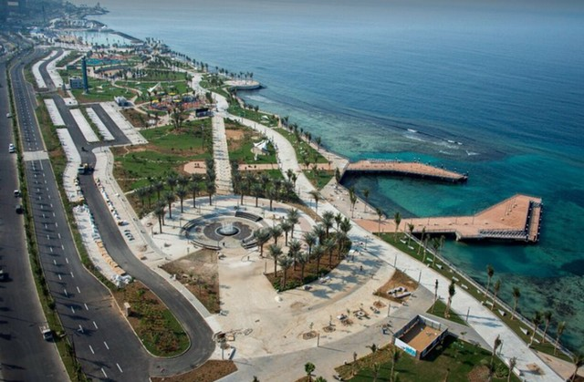

Jeddah Corniche is one of the most important tourist attractions in Jeddah, extending along the Red Sea coast, on the western side of Jeddah. It is one of the largest waterfronts, which is preferred by visitors and local residents, for strolling in Jeddah, and spending enjoyable times.

Sailing and fishing, hunting him on the piers of the beaches, or getting to his favorite secret spots, is an authentic pleasure in coastal cities such as Jeddah. Fishing enthusiasts know the thrill of making a bait, catching a hook, and getting a catch. Nothing compares to the right moment.